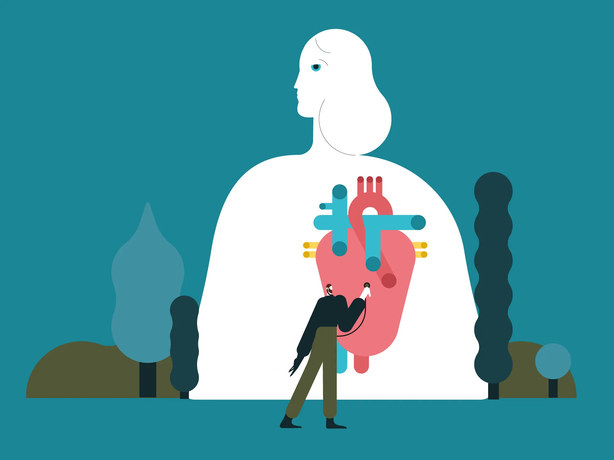
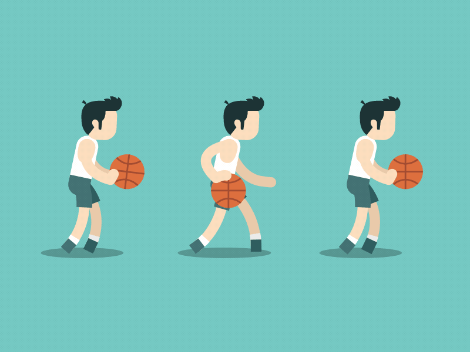
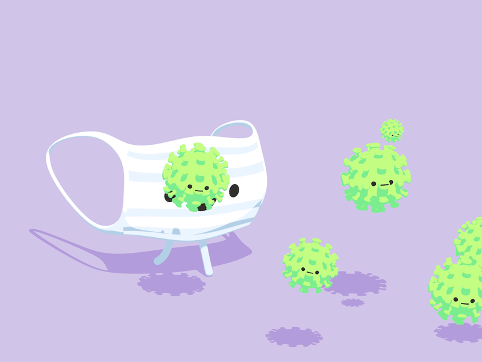
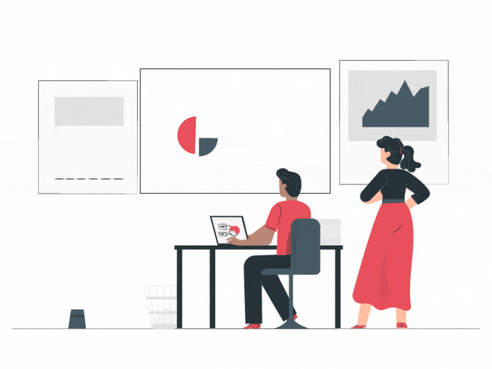

December 2023
A machine learning model to predict the likelihood of heart disease
based on various medical attributes provided by the dataset
using Excel, Python, Pandas and other python libraries


A data science project for the OKC Thunder that implemented Python libraries such as Numpy, SKLearn, and MatPlotLib to create data models, create predictive models based on the
data, and to create visualizations for the data available

Breakdown of Global COVID-19 data using SQL to get an understanding of COVID cases and vacinations statistics throughout the world with queries, transforming raw data into actionable insights, enhancing the project's impact on
global health outcomes

A dashboard with Tableau to help client compare between different tech and consumer good stocks from 2013-2016. Transformed and processed data by using Excel to ensure data completeness and validity. Used Tableau to create a dashboard and display the data.

A dashboard that utilized Excel to sort and organize data, separating by States in the United States to identify the total cases and death within each state. Used Tableau to create a dashboard, utilizing line graphs, maps, and charts to display the data.